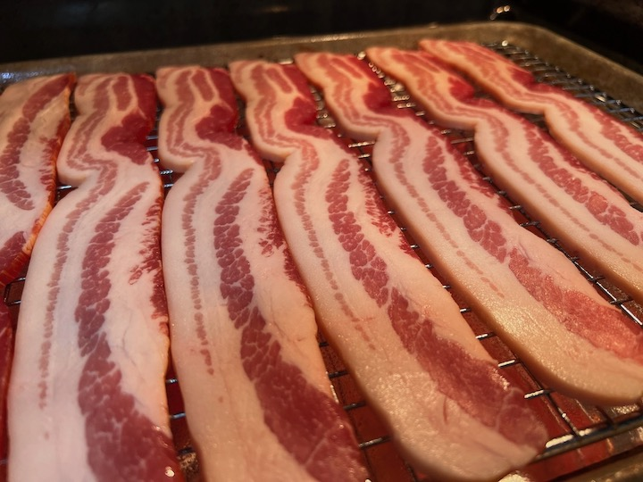

Oven Baked Bacon

Do you want bacon but not want to stand in front of a stove and get burned
by bacon grease? Yes you do. Why are you not cooking your bacon in the oven?
It's more consistent, easier to clean up, and takes about the same amount of time.
Ingredients and supplies
- Bacon. However much you want to eat.
- A quarter sheet pan. Available at a restaurant supply store.
- Aluminum foil. Available at probably literally every store.
- Rack for the sheet pan. These will be right next to the sheet pans at the restaurant store.
Method
- Line your sheet pan with aluminum foil
- Place your rack on the foil-lined sheet pan
- Put as much bacon as you want to eat on the rack. So all of it.
- Pop the whole thing in a cold oven and set the oven to 375.
- Once the oven is preheated, you should be about ready to flip. Flip the bacon and
cook another 15 minutes or so on the other side.
- Cook, flipping regularly until the bacon is done to your desired level of crispness
- Devour
Home